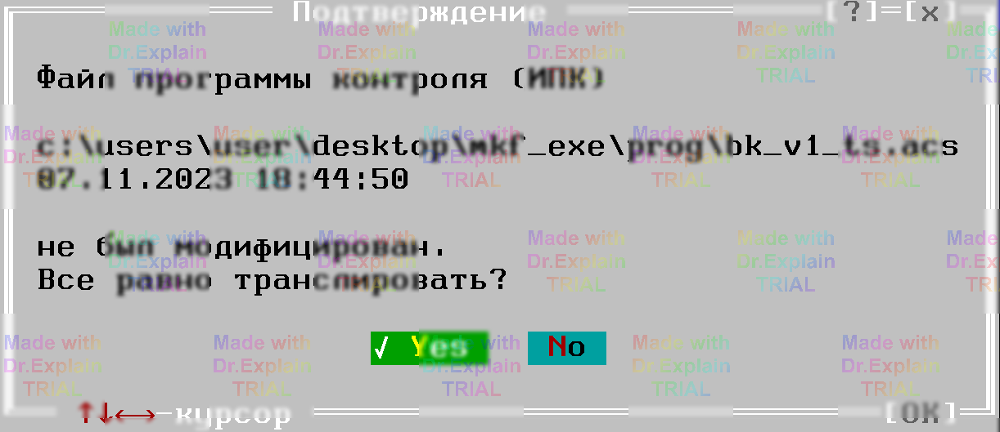
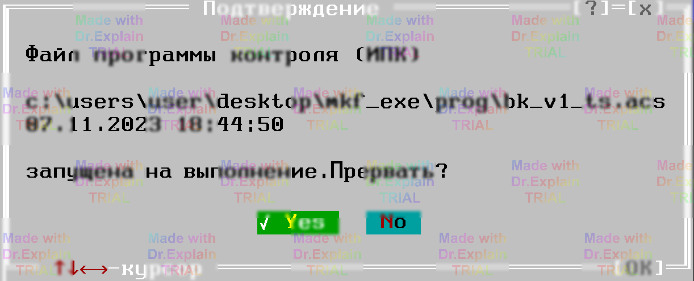

3.4 Процесс трансляции ПК
3.4.1 Общие особенности
Алгоритм одинаков для исходного (ИПК) и оттранслированного (ОПК) форматов, за исключением трёх моментов:
-
Исходные данные
- для ИПК — содержимое активного окна редактора;
- для ОПК — файл из архива ПК.
-
Предупреждения и ошибки
- при ОПК предупреждения всегда подавляются; обнаруженная ошибка сразу останавливает процесс;
- при ИПК показ предупреждений управляется опцией «Вывод предупреждений»; ошибки выводятся в окно «Сообщения», но не прерывают трансляцию.
- Повторная трансляция Если с момента предыдущего запуска ИПК/ОПК и параметры аппаратуры не менялись, ПОАСК спросит о необходимости повторной трансляции. Выполнение продолжится только при утвердительном ответе.

3.4.2 Конфликт с запущенной ПК
Если во время старта трансляции найдена выполняющаяся (но остановленная) программа контроля, появится запрос на её прерывание. При отказе трансляция не начинается.

3.4.3 Ход работы
Во время трансляции в центре экрана показывается служебное окно с информацией:
- имя программы;
- счётчик ошибок;
- счётчик предупреждений;
- кол‑во обработанных строк;
- текущий этап;
- затраченное время «трансляции» и «компиляции».
3.4.4 Этапы
-
Трансляция
- создание данных выполнения + проверка синтаксиса;
-
при ошибках:
- ИПК → листинг ошибок в «Сообщениях»;
- ОПК → диалог с описанием ошибки.
-
Компиляция (перекрёстные проверки)
При ошибках действия те же. При успехе листинг помещается в окно «Программа». -
Создание ОПК
Для ИПК без ошибок (и если разрешено настройкой) формируется
одноимённый файл с расширением
.opk. ПОАСК контролирует, чтобы исходный файл не имел расширения.opk. - Предупреждения Если они есть и их вывод разрешён, система спросит, открыть ли окно «Сообщения».
3.4.5 Экстренное прерывание
Нажатие Esc останавливает процесс; промежуточные данные выполнения удаляются.